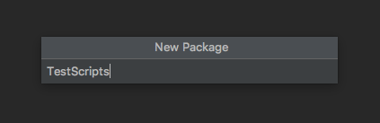
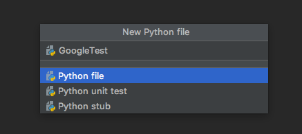
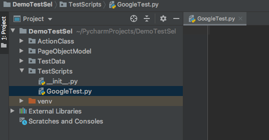

Package and Python File Creation Before Code Development
Right click on project --> new --> Python Package

Give Pakage name as --> Click Enter --> Python Package is created successfully.

Right click on Python Package --> new --> Python File --> Give Any File Name --> Click Enter --> Python File is created successfully.


Code To Launch Google , do few validations and Close the Browser
# Developed By MITHUN ROY
# https://manual2Automation.com
import unittest
from selenium import webdriver
class GooglePageTest(unittest.TestCase):
Instance = None
def setUp(self):
global Instance
Instance = webdriver.Chrome("/Users/path/Downloads/chromedriver")
Instance.implicitly_wait(10)
Instance.get("https://www.google.com")
def test_scenarios_execution(self):
Instance.find_element_by_xpath("//input[@name='q']").is_displayed()
Instance.find_element_by_xpath("//input[@name='btnK']").is_displayed()
def tearDown(self):
Instance.quit()
if __name__ == '__main__':
unittest.main()
unittest been built into the Python standard library since version 2.0. We can see it in commercial Python applications and open-source projects. unittest contains both a testing framework and a test runner. unittest has some important requirements for writing and executing tests.
The unittest module provides a rich set of tools for constructing and running tests. This section demonstrates that a small subset of the tools suffice to meet the needs of most users.
GooglePageTest = Class Name
unittest.TestCase = A testcase is created by subclassing unittest.TestCase. The three individual tests are defined with methods are named as setUp , test_scenarios_execution , tearDown
The setUp() and tearDown() methods allow you to define instructions that will be executed before and after each test method.
Instance = None = Class Variable Declaration
global Instance = To make Instance as Global Variable
Instance = webdriver.Chrome("/Users/mithunroy/Downloads/chromedriver")
= To initialize the webdriver using Chrome Browser
Instance.implicitly_wait(10) = To implicitly wait for 10 seconds.
Instance.get("https://www.google.com") = Launch Google Chrome
Instance.find_element_by_xpath("//input[@name='q']").is_displayed() = To Check For Web Element Present Or not.
Instance.quit() = To Quit Chrome Browser
The final block shows a simple way to run the tests. unittest.main() provides a command-line interface to the test script.